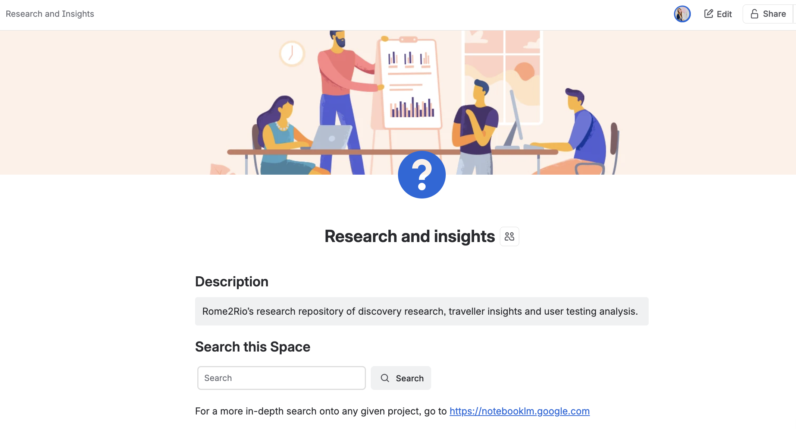
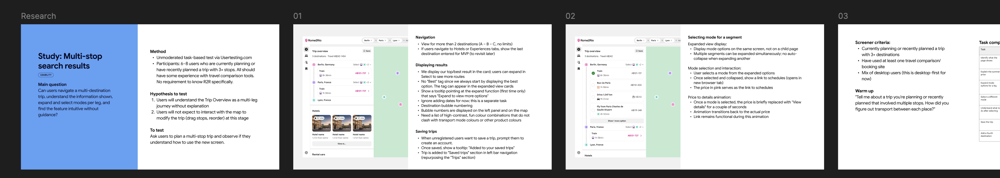
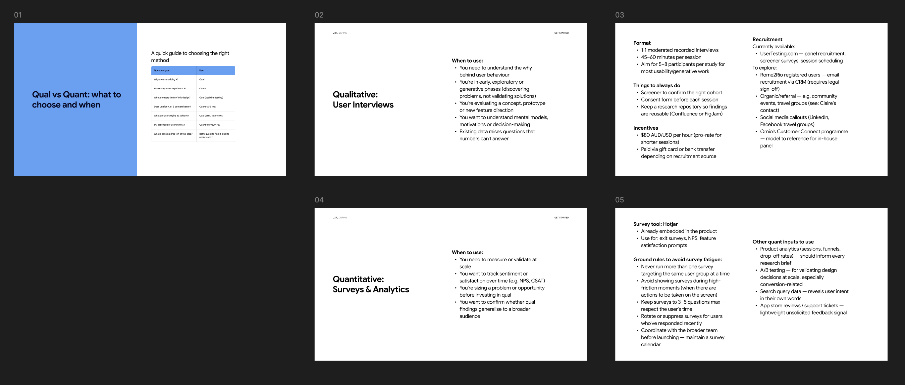

Rome2Rio · 2025–2026
Rome2Rio was building the product without a strong understanding of what users need. I set up a continuous research programme with fortnightly interviews, a shared insight repository and findings built into planning, so research shapes strategy before it's set instead of after.
My role
Product Design Lead
Stakeholders
Product, engineering, brand and Omio legal
Outcome
Research as habit, not event

Product decisions were being made without a steady picture of how users think and behave. Research happened on its own, usually testing a feature that was already designed or checking a hunch. The team couldn't easily find what we'd learned either, and nothing turned that understanding into an advantage.
Research should shape strategy instead of just checking features. When there's nothing specific to test there is still plenty to learn, and open-ended qualitative research is where most of the strategic value is.

"Make research a habit instead of an event. Start small and build trust."
Every two weeks we run a 30-minute exploratory interview with someone from our panel. The topics shift with what the team is thinking about, like where people lose confidence in a trip, how they think about multi-stop routes or how they move between devices. There's no prototype and no script, just a conversation.
Findings go into a shared Confluence repo that the whole team can open. Each study records the question, the method, the key findings and what they mean for us. Engineers can pull the details with AI tools. Product leads see what users said in context and designers use real quotes to back up decisions in crit.
A Slack channel shares standout observations each month. Quarterly planning has a what we heard slot so findings can reduce the risk in strategic bets before they're committed.

I got the go-ahead from Omio legal to recruit users globally then set up the panel and wrote templates so picking up a study doesn't start from a blank page. Findings sit in rituals the team already has like sprint planning, crit and a Slack channel, so research carries on without me in the room.